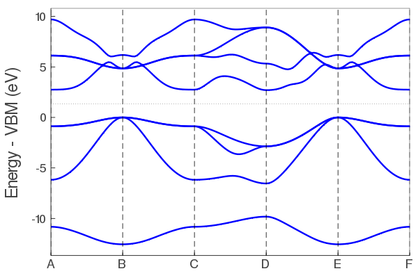

Running tight-binding calculations
How to run tight-binding calculations using the pre-fit tight-binding coefficients. Note, only elemental and binary systems are currently supported.
Running a julia function for the first time will compile the function. Future runs will be much faster.
Create a crystal object
Consists of lattice vectors, atomic positions, and atom types.
using TightlyBound
A = [2.1 2.1 0.0;2.1 0.0 2.1;0.0 2.1 2.1];
pos = [0.0 0.0 0.0];
types = ["Al"];
fcc_al = makecrys(A, pos, types)Units: Å A1= 2.10000 2.10000 0.00000 A2= 2.10000 0.00000 2.10000 A3= 0.00000 2.10000 2.10000 Al 0.00000 0.00000 0.00000
Current default units are Angstrom and eV. You can change the global units to atomic units with set_units(both="atomic") if you prefer.
Alternatively, you can read the positions from a simple POSCAR or Quantum Espresso input file.
rbcl = makecrys("../src/POSCAR_rbcl")Units: Å A1= 3.90963 -0.00000 0.00000 A2= -0.00000 3.90963 0.00000 A3= 0.00000 -0.00000 3.90963 Rb 0.00000 0.00000 0.00000 Cl 0.50000 0.50000 0.50000
Do a self-consistent calculation.
Gets the energy and charge density.
alp = makecrys("../src/POSCAR_alp")
energy, tbc_alp = scf_energy(alp);
println("The energy is $energy eV")Begin scf_energy------------- Load TB parameters from file prepare atoms ["Al", "P"] add_to_database Set([:P]) found /home/runner/work/TightlyBound.jl/TightlyBound.jl/src/../dats/pbesol/v1.1/coef.el.2bdy.P.xml.gz version 1 added to cache (:P, :P) found /home/runner/work/TightlyBound.jl/TightlyBound.jl/src/../dats/pbesol/v1.1/coef.el.3bdy.P.xml.gz version 1 added to cache (:P, :P, :P) add_to_database Set([:P, :Al]) found /home/runner/work/TightlyBound.jl/TightlyBound.jl/src/../dats/pbesol/v1.0/coef.el.2bdy.Al.P.xml.gz version 1 added to cache (:P, :Al) twobody found /home/runner/work/TightlyBound.jl/TightlyBound.jl/src/../dats/pbesol/v1.0/coef.el.3bdy.Al.P.xml.gz version 1 added to cache (:P, :Al) threebody add_to_database Set([:Al]) found /home/runner/work/TightlyBound.jl/TightlyBound.jl/src/../dats/pbesol/v1.1/coef.el.2bdy.Al.xml.gz version 1 added to cache (:Al, :Al) found /home/runner/work/TightlyBound.jl/TightlyBound.jl/src/../dats/pbesol/v1.1/coef.el.3bdy.Al.xml.gz version 1 added to cache (:Al, :Al, :Al) construct ----- Construct tight-binding model from crystal structure distances CHECK FRONTIER - everything fine 2body 3body onsite ----- 9.216392 seconds (20.10 M allocations: 985.858 MiB, 3.89% gc time) ------ Do SCF Mixing mode: pulay Get initial guess from tbc DQ: [0.0, -0.0] Parameters: smearing = 0.01 conv_thr = 1.0e-5, iters = 75, mix = 0.8, grid = missing START SCF ---------------- SCF CALC 0001 energy -10.59664115 SCF CALC 0002 energy -10.56552382 en_diff: 3.111733E-02 dq_diff: 1.009074E+00 SCF CALC 0003 energy -10.54563218 en_diff: 1.989163E-02 dq_diff: 8.047900E-01 SCF CALC 0004 energy -10.46340657 en_diff: 8.222561E-02 dq_diff: 1.615424E-01 SCF CALC 0005 energy -10.44143562 en_diff: 2.197095E-02 dq_diff: 3.226287E-02 SCF CALC 0006 energy -10.43691652 en_diff: 4.519103E-03 dq_diff: 6.455653E-03 SCF CALC 0007 energy -10.43600030 en_diff: 9.162187E-04 dq_diff: 1.290921E-03 SCF CALC 0008 energy -10.43581708 en_diff: 1.832203E-04 dq_diff: 2.581985E-04 YES convergence in 8 iters, energy -10.435817082570459 eV dq = [-1.158, 1.158] END SCF ------------------ scf_energy success, done The energy is -10.435817082570459 eV
This returns the (non-magnetic) atomization energy, and a tight-binding object with the TB matrix elements and SCF electron density calculated for post-processing.
Plot the band structure.
Using the tight-binding object tbc_alp from above. Note: SCF must be done first.
plot_bandstr(tbc_alp, do_display=false);plot_bandstr align vbm color = blue markersize = 0

Use do_display=true to produce an interactive plot. Here is is false because we are saving a static figure with savefig for the docs.
The default plot_bandstr just picks some random kpoints, but you can add your own kpath. We also project onto the s orbital of Al.
kpath=[0.0 0.0 0.0; 0.5 0.5 0.5; 0.0 0.5 0.5];
knames=["Γ", "X", "V"];
plot_bandstr(tbc_alp, kpath=kpath, names=knames, npts=100, proj_orbs=[:s], proj_types=["Al"], do_display=false);proj_inds [1] plot_bandstr align vbm

You can also plot the DOS.
dos(tbc_alp, do_display=false);grid [14, 14, 14]
Projection type: atomic
PROJ
("P", [5, 6, 7, 8], 4)
("Al", [1, 2, 3, 4], 4)
Project onto orbitals instead with proj_type=:orbs
Calculate force / stress
energy, force, stress, tbc = scf_energy_force_stress(tbc_alp);
println("energy $energy")
println()
println("Forces")
show(stdout, "text/plain", force)
println()
println("Stress")
show(stdout, "text/plain", stress)prepare atoms ["Al", "P"]
Calculate Force, Stress (no scf)
get_energy_force_stress_fft
20.222345 seconds (53.13 M allocations: 2.722 GiB, 5.03% gc time)
done
----
energy -10.435780403797825
Forces
2×3 Array{Float64,2}:
-1.35839e-11 -1.35841e-11 -1.35837e-11
0.0 0.0 0.0
Stress
3×3 Array{Float64,2}:
0.128043 0.0 0.0
0.0 0.128043 0.0
0.0 0.0 0.128043Can also be called directly on a new crystal structure instead of a tb_crys object.
Relax structure
crys_new, tbc_updated, energy, force, stress = relax_structure(alp);
println("Energy new $energy")
println()
println("Force")
show(stdout, "text/plain", force)
println()
println("Stress")
show(stdout, "text/plain", stress)prepare atoms ["Al", "P"]
-----
Construct tight-binding model from crystal structure
distances
CHECK FRONTIER - everything fine
2body
3body
onsite
-----
------
Do SCF
Mixing mode: pulay
Get initial guess from tbc
DQ: [0.0, -0.0]
Parameters:
smearing = 0.01 conv_thr = 1.0e-7, iters = 75, mix = 0.8, grid = missing
START SCF ----------------
SCF CALC 0001 energy -10.59664115
SCF CALC 0002 energy -10.56552382 en_diff: 3.111733E-02 dq_diff: 1.009074E+00
SCF CALC 0003 energy -10.54563218 en_diff: 1.989163E-02 dq_diff: 8.047900E-01
SCF CALC 0004 energy -10.46340657 en_diff: 8.222561E-02 dq_diff: 1.615424E-01
SCF CALC 0005 energy -10.44143562 en_diff: 2.197095E-02 dq_diff: 3.226287E-02
SCF CALC 0006 energy -10.43691652 en_diff: 4.519103E-03 dq_diff: 6.455653E-03
SCF CALC 0007 energy -10.43600030 en_diff: 9.162187E-04 dq_diff: 1.290921E-03
SCF CALC 0008 energy -10.43581708 en_diff: 1.832203E-04 dq_diff: 2.581985E-04
SCF CALC 0009 energy -10.43578040 en_diff: 3.667877E-05 dq_diff: 5.163873E-05
SCF CALC 0010 energy -10.43577307 en_diff: 7.334705E-06 dq_diff: 1.032781E-05
SCF CALC 0011 energy -10.43577160 en_diff: 1.467066E-06 dq_diff: 2.065558E-06
YES convergence in 11 iters, energy -10.435771602026842 eV dq = [-1.158, 1.158]
END SCF ------------------
starting vec
[0.0, 0.0, 0.0, 0.25, 0.25, 0.25, 0.0, 0.0, 0.0, 0.0, 0.0, 0.0]
CG START
CG RUN GRAD1
START SCF ----------------
SCF CALC 0001 energy -10.43577131
SCF CALC 0002 energy -10.43577128 en_diff: 3.233188E-08 dq_diff: 2.458327E-07
YES convergence in 2 iters, energy -10.43577127628824 eV dq = [-1.158, 1.158]
END SCF ------------------
get_energy_force_stress_fft
0.991414 seconds (8.07 M allocations: 760.596 MiB, 15.41% gc time)
FCALL 1 en: -0.7670147629134475 (Ryd) fsum: 9.151554143759647e-13 ssum: 0.0024154458928289813 xxxxxxxxxxxxxxxxxxxxxxxxxxxxxxx
A1= +2.60000 +2.60000 +0.00000 | +0.12804 +0.00000 +0.00000
A2= +2.60000 +0.00000 +2.60000 | +0.00000 +0.12804 +0.00000
A3= +0.00000 +2.60000 +2.60000 | +0.00000 +0.00000 +0.12804
Al +0.00000 +0.00000 +0.00000 | -0.00000 -0.00000 -0.00000
P +0.25000 +0.25000 +0.25000 | +0.00000 +0.00000 +0.00000
CG RUN LS1
START SCF ----------------
SCF CALC 0001 energy -10.69860357
SCF CALC 0002 energy -10.75179739 en_diff: 5.319382E-02 dq_diff: 1.398487E-01
SCF CALC 0003 energy -10.76491245 en_diff: 1.311506E-02 dq_diff: 1.073601E-01
SCF CALC 0004 energy -10.79647060 en_diff: 3.155814E-02 dq_diff: 2.278187E-02
SCF CALC 0005 energy -10.80310028 en_diff: 6.629686E-03 dq_diff: 4.445451E-03
SCF CALC 0006 energy -10.80436383 en_diff: 1.263551E-03 dq_diff: 8.981867E-04
SCF CALC 0007 energy -10.80462011 en_diff: 2.562810E-04 dq_diff: 1.788788E-04
SCF CALC 0008 energy -10.80467101 en_diff: 5.089856E-05 dq_diff: 3.583858E-05
SCF CALC 0009 energy -10.80468122 en_diff: 1.020690E-05 dq_diff: 7.162502E-06
YES convergence in 9 iters, energy -10.80468121950141 eV dq = [-0.935, 0.935]
END SCF ------------------
START SCF ----------------
SCF CALC 0001 energy -10.07006811
SCF CALC 0002 energy -10.15568167 en_diff: 8.561357E-02 dq_diff: 1.660434E-01
SCF CALC 0003 energy -10.17427679 en_diff: 1.859511E-02 dq_diff: 1.246684E-01
SCF CALC 0004 energy -10.21209335 en_diff: 3.781656E-02 dq_diff: 2.847908E-02
SCF CALC 0005 energy -10.22119207 en_diff: 9.098718E-03 dq_diff: 5.163094E-03
SCF CALC 0006 energy -10.22270697 en_diff: 1.514910E-03 dq_diff: 1.097609E-03
SCF CALC 0007 energy -10.22304400 en_diff: 3.370259E-04 dq_diff: 2.102407E-04
SCF CALC 0008 energy -10.22310647 en_diff: 6.246585E-05 dq_diff: 4.324863E-05
SCF CALC 0009 energy -10.22311960 en_diff: 1.313132E-05 dq_diff: 8.483595E-06
YES convergence in 9 iters, energy -10.223119597990742 eV dq = [-0.698, 0.698]
END SCF ------------------
START SCF ----------------
SCF CALC 0001 energy -10.91498311
SCF CALC 0002 energy -10.87502508 en_diff: 3.995803E-02 dq_diff: 1.834279E-01
SCF CALC 0003 energy -10.86331946 en_diff: 1.170562E-02 dq_diff: 1.417897E-01
SCF CALC 0004 energy -10.83115950 en_diff: 3.215996E-02 dq_diff: 2.971429E-02
SCF CALC 0005 energy -10.82377397 en_diff: 7.385527E-03 dq_diff: 5.819745E-03
SCF CALC 0006 energy -10.82233290 en_diff: 1.441070E-03 dq_diff: 1.173669E-03
SCF CALC 0007 energy -10.82203983 en_diff: 2.930779E-04 dq_diff: 2.339197E-04
SCF CALC 0008 energy -10.82198154 en_diff: 5.828878E-05 dq_diff: 4.685046E-05
SCF CALC 0009 energy -10.82196985 en_diff: 1.168768E-05 dq_diff: 9.364593E-06
YES convergence in 9 iters, energy -10.82196984867345 eV dq = [-0.962, 0.962]
END SCF ------------------
get_energy_force_stress_fft
0.796214 seconds (6.21 M allocations: 613.427 MiB, 14.42% gc time)
FCALL 2 en: -0.7953998241219673 (Ryd) fsum: 1.0945571679957521e-8 ssum: 0.0001814240815339415 xxxxxxxxxxxxxxxxxxxxxxxxxxxxxxx
A1= +2.79098 +2.79098 +0.00000 | -0.00962 -0.00000 -0.00000
A2= +2.79098 +0.00000 +2.79098 | -0.00000 -0.00962 -0.00000
A3= +0.00000 +2.79098 +2.79098 | -0.00000 -0.00000 -0.00962
Al +0.00000 +0.00000 +0.00000 | -0.00000 -0.00000 -0.00000
P +0.25000 +0.25000 +0.25000 | +0.00000 +0.00000 +0.00000
MY CONJGRAD 1 -0.7953998241219673 sg 0.0532340709464403 step_size 0.8881335927396808 --------------------
START SCF ----------------
SCF CALC 0001 energy -10.81884486
SCF CALC 0002 energy -10.81955468 en_diff: 7.098154E-04 dq_diff: 2.403342E-03
SCF CALC 0003 energy -10.81974240 en_diff: 1.877242E-04 dq_diff: 1.852944E-03
SCF CALC 0004 energy -10.82022253 en_diff: 4.801256E-04 dq_diff: 3.897690E-04
SCF CALC 0005 energy -10.82032685 en_diff: 1.043270E-04 dq_diff: 7.633350E-05
SCF CALC 0006 energy -10.82034701 en_diff: 2.015873E-05 dq_diff: 1.539397E-05
YES convergence in 6 iters, energy -10.820347011332148 eV dq = [-0.958, 0.958]
END SCF ------------------
MY CG 1 -0.7953998241219673 sg 0.0532340709464403 step_size 0.2864947073353809 good false
START SCF ----------------
SCF CALC 0001 energy -10.82345996
SCF CALC 0002 energy -10.82275917 en_diff: 7.007831E-04 dq_diff: 2.402398E-03
SCF CALC 0003 energy -10.82257320 en_diff: 1.859738E-04 dq_diff: 1.852856E-03
SCF CALC 0004 energy -10.82209582 en_diff: 4.773794E-04 dq_diff: 3.894321E-04
SCF CALC 0005 energy -10.82199208 en_diff: 1.037437E-04 dq_diff: 7.630367E-05
SCF CALC 0006 energy -10.82197201 en_diff: 2.006781E-05 dq_diff: 1.538413E-05
YES convergence in 6 iters, energy -10.82197200842898 eV dq = [-0.962, 0.962]
END SCF ------------------
get_energy_force_stress_fft
0.765739 seconds (6.20 M allocations: 612.743 MiB, 13.17% gc time)
FCALL 3 en: -0.7953999828610132 (Ryd) fsum: 1.094554787792258e-8 ssum: 0.0001814239207339607 xxxxxxxxxxxxxxxxxxxxxxxxxxxxxxx
A1= +2.79098 +2.79098 +0.00000 | -0.00962 -0.00000 -0.00000
A2= +2.79098 +0.00000 +2.79098 | -0.00000 -0.00962 -0.00000
A3= +0.00000 +2.79098 +2.79098 | -0.00000 -0.00000 -0.00962
Al +0.00000 +0.00000 +0.00000 | -0.00000 -0.00000 -0.00000
P +0.25000 +0.25000 +0.25000 | +0.00000 +0.00000 +0.00000
MY CONJGRAD 2 -0.7953999828610132 sg 0.053234023763963134 step_size 0.2864947073353809 --------------------
START SCF ----------------
SCF CALC 0001 energy -10.83053441
SCF CALC 0002 energy -10.82816879 en_diff: 2.365615E-03 dq_diff: 8.320860E-03
SCF CALC 0003 energy -10.82753681 en_diff: 6.319787E-04 dq_diff: 6.423981E-03
SCF CALC 0004 energy -10.82590052 en_diff: 1.636296E-03 dq_diff: 1.346858E-03
SCF CALC 0005 energy -10.82554585 en_diff: 3.546673E-04 dq_diff: 2.643009E-04
SCF CALC 0006 energy -10.82547704 en_diff: 6.881153E-05 dq_diff: 5.324555E-05
SCF CALC 0007 energy -10.82546311 en_diff: 1.392833E-05 dq_diff: 1.061895E-05
YES convergence in 7 iters, energy -10.825463111347638 eV dq = [-0.974, 0.974]
END SCF ------------------
START SCF ----------------
SCF CALC 0001 energy -10.83057991
SCF CALC 0002 energy -10.82826741 en_diff: 2.312501E-03 dq_diff: 8.268084E-03
SCF CALC 0003 energy -10.82764735 en_diff: 6.200627E-04 dq_diff: 6.389004E-03
SCF CALC 0004 energy -10.82603171 en_diff: 1.615638E-03 dq_diff: 1.336577E-03
SCF CALC 0005 energy -10.82568297 en_diff: 3.487344E-04 dq_diff: 2.626481E-04
SCF CALC 0006 energy -10.82561515 en_diff: 6.782497E-05 dq_diff: 5.287552E-05
SCF CALC 0007 energy -10.82560144 en_diff: 1.371194E-05 dq_diff: 1.054876E-05
YES convergence in 7 iters, energy -10.825601436248123 eV dq = [-0.987, 0.987]
END SCF ------------------
MY CG 2 -0.7953999828610132 sg 0.053234023763963134 step_size 1.541256802488888 good true
START SCF ----------------
SCF CALC 0001 energy -10.82362367
SCF CALC 0002 energy -10.82471127 en_diff: 1.087602E-03 dq_diff: 3.784718E-03
SCF CALC 0003 energy -10.82500074 en_diff: 2.894706E-04 dq_diff: 2.922814E-03
SCF CALC 0004 energy -10.82574955 en_diff: 7.488087E-04 dq_diff: 6.122639E-04
SCF CALC 0005 energy -10.82591091 en_diff: 1.613580E-04 dq_diff: 1.202335E-04
SCF CALC 0006 energy -10.82594223 en_diff: 3.132522E-05 dq_diff: 2.421328E-05
SCF CALC 0007 energy -10.82594857 en_diff: 6.335302E-06 dq_diff: 4.829827E-06
YES convergence in 7 iters, energy -10.825948565747247 eV dq = [-0.981, 0.981]
END SCF ------------------
get_energy_force_stress_fft
0.774325 seconds (6.21 M allocations: 614.460 MiB, 14.05% gc time)
FCALL 4 en: -0.7956922543269097 (Ryd) fsum: 5.977063176417146e-8 ssum: 1.763216694782519e-7 xxxxxxxxxxxxxxxxxxxxxxxxxxxxxxx
A1= +2.77333 +2.77333 -0.00000 | +0.00001 +0.00000 +0.00000
A2= +2.77333 -0.00000 +2.77333 | +0.00000 +0.00001 +0.00000
A3= -0.00000 +2.77333 +2.77333 | +0.00000 +0.00000 +0.00001
Al -0.00000 -0.00000 -0.00000 | +0.00000 +0.00000 +0.00000
P +0.25000 +0.25000 +0.25000 | -0.00000 -0.00000 -0.00000
yes conv
Relax done
Final Energy -10.825948565747247
A1= +2.77333 +2.77333 -0.00000 | +0.00001 +0.00000 +0.00000
A2= +2.77333 -0.00000 +2.77333 | +0.00000 +0.00001 +0.00000
A3= -0.00000 +2.77333 +2.77333 | +0.00000 +0.00000 +0.00001
Al -0.00000 -0.00000 -0.00000 | +0.00000 +0.00000 +0.00000
P +0.25000 +0.25000 +0.25000 | -0.00000 -0.00000 -0.00000
Energy new -147.2945874625202
Force
2×3 Array{Float64,2}:
6.27382e-7 6.27382e-7 6.27382e-7
-6.27382e-7 -6.27382e-7 -6.27382e-7
Stress
3×3 Array{Float64,2}:
9.34671e-6 2.7777e-8 2.7777e-8
2.7777e-8 9.34671e-6 2.7777e-8
2.7777e-8 2.7777e-8 9.34671e-6Energy is lower, stress is near zero, forces are zero by symmetry in Zinc Blende structure.
Force/Stress defaults are eV/Ang and eV/Ang^3.